Final approved private draft 17. The owner approved the slightly fuller Services descriptions below. Title, subtitle and other content remain unchanged; nothing was published.
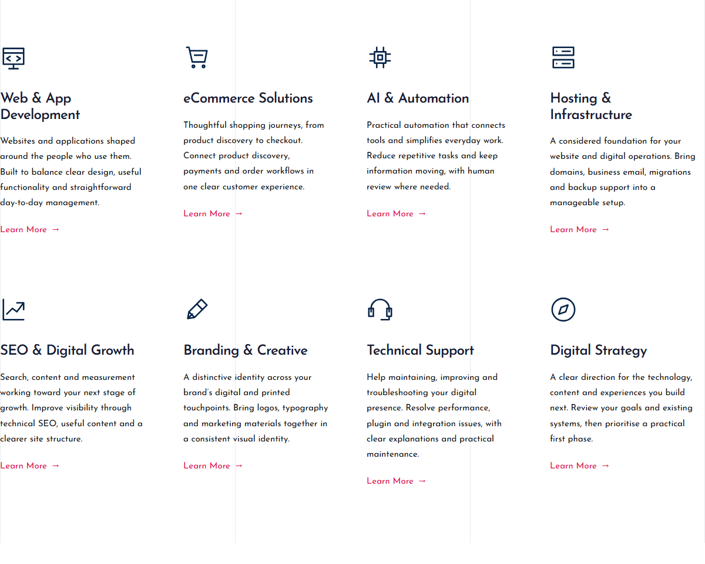
Final eight-field revision comparison
The captures below document the initial correction and interaction checks. Services wording in these earlier captures was superseded by the approved draft 17 above. Section captures exclude fixed navigation/accessibility overlays so the full sections can be compared.
The heading, introduction and first card share the left content line. Eight concise descriptions are restored; existing responsive columns remain.
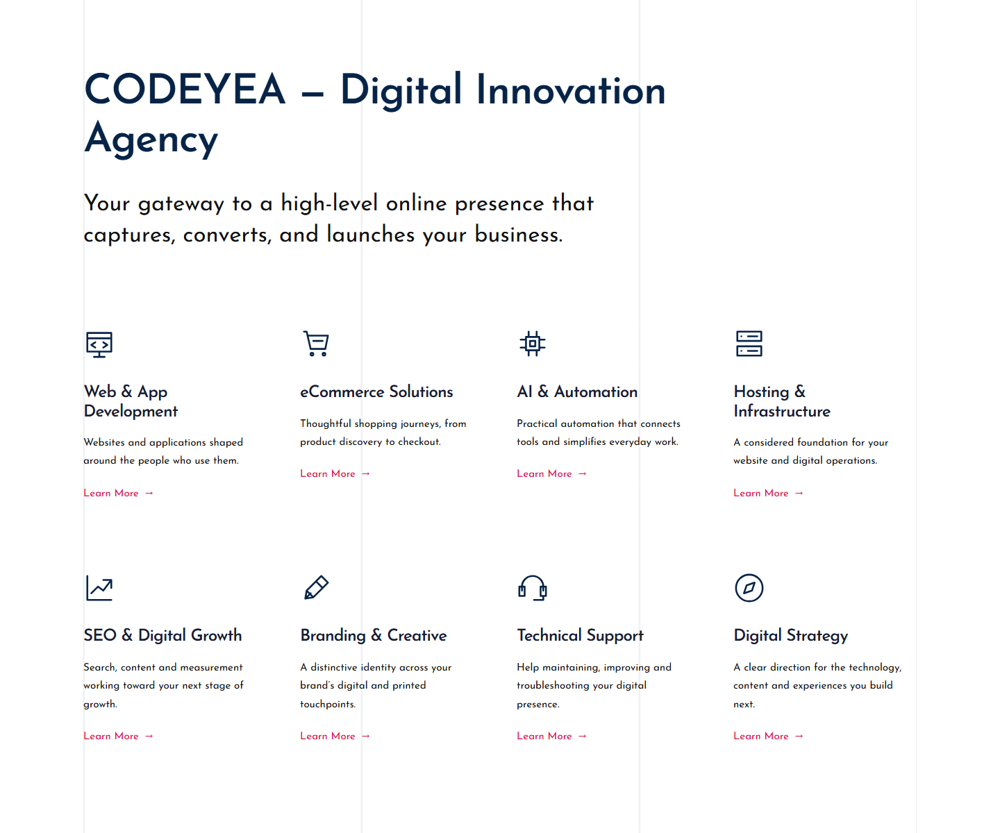
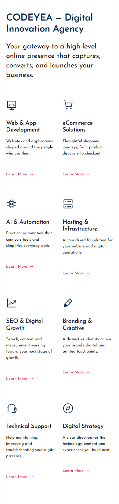
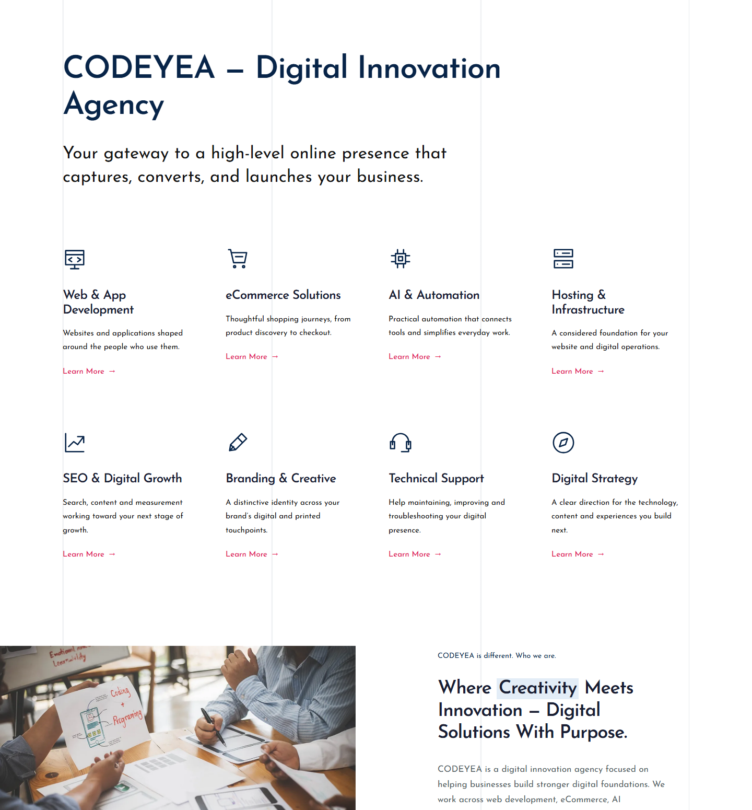
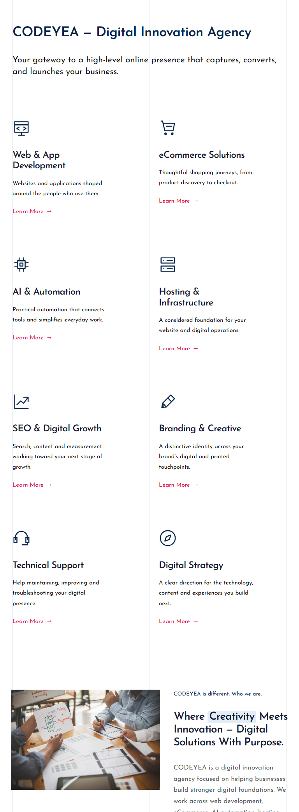
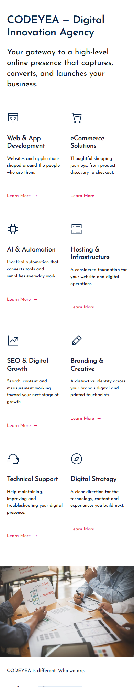
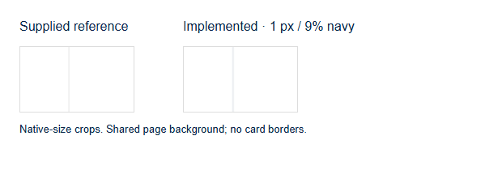
One shared interactive component. Owner preview uses the button placeholder; the configured anchor was tested only in the isolated test environment. The outlined pink marker in the recording makes pointer movement visible and is not part of the website.
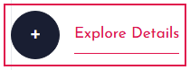
Pointer offsets and exact return to centre
Each recording includes setup, then 07 → 08, the deliberate end pause and a short fade/reset to 01. Manual navigation stops at the end. There is no first-card clone.
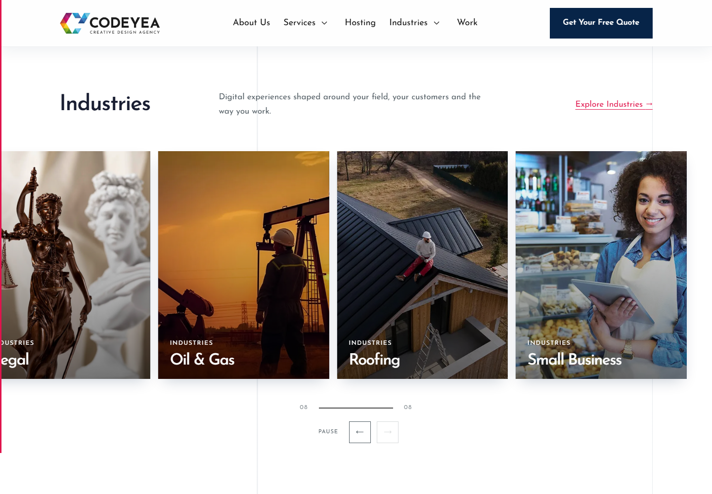
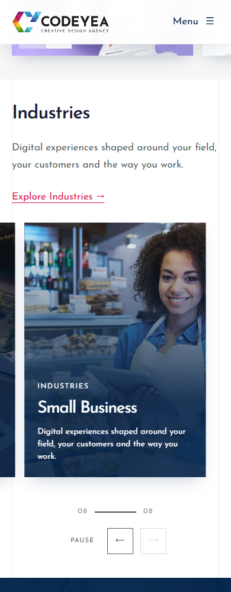
The real CMS comparison below contrasts current draft 16 with pre-correction draft 15. The interface describes a hypothetical restore; no restore was performed. Only the nine intended text fields differ.
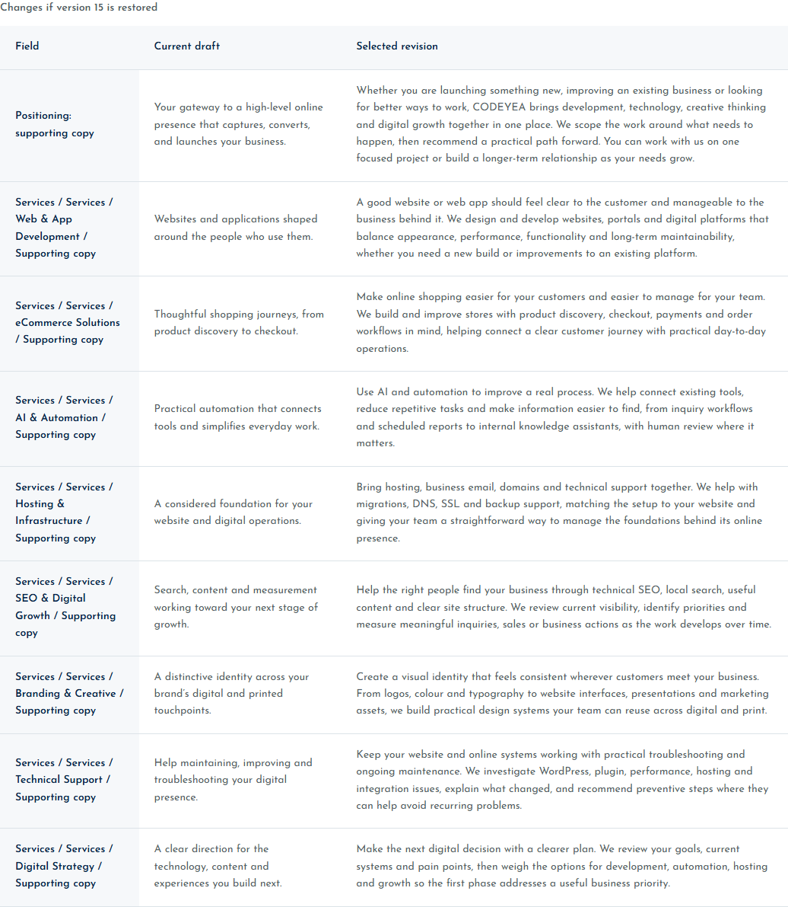
Revision and audit evidence · Published snapshot preservation check